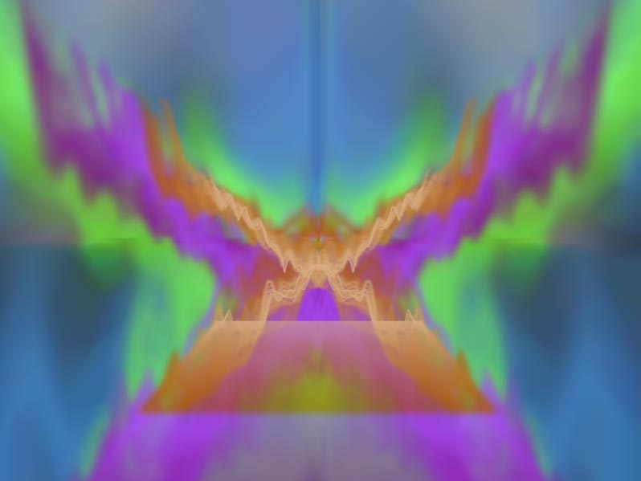

Введение в WebAudio
Обзор
До сих пор я показал вам двумерную графику, анимацию и 3D с аппаратным ускорением. После того, как вы что-то создадите с этими технологиями, то заметите как чего-то не хватает — звука! Традиционно хороший звук в Интернете без плагинов варьируется от ужасного до невозможного, но в последнее время это изменилось, благодаря новому API под названием WebAudio.
Обратите внимание, что этот API всё ещё меняется, хотя он гораздо стабильнее чем раньше. Используйте WebAudio для экспериментов, но не в рабочем коде, по крайней мере с альтернативой на Flash. Попробуйте SoundManager2 как запасной вариант.
Элемент <audio> против WebAudio
Вы, возможно, слышали об элементе <audo>. Этот новый элемент добавлен в HTML5 и выглядит как <audio src="music.mp3">. Элемент <audo> отлично подходит для воспроизведения песен. Вы просто включаете его на свою страницу так же, как изображение. Браузер отображает его с панелью управления. Также имеется минимальный API. К сожалению, элемент <audo> хорош только для воспроизведения музыки. Вы не можете легко воспроизводить короткие звуки и большинство реализаций позволяют воспроизводить только один звук за раз. Что ещё более важно, вы не можете генерировать звук на лету или получить доступ к библиотеке сэмплов для дальнейшей обработки. Элемент <audo> хорош для чего и предназначен: воспроизведение музыки, но весьма ограничено.
Для устранения этих недостатков производители браузеров представили новую спецификацию под названием WebAudio API. Она определяет весь API обработки звука в комплекте генерацией звуков, фильтрами, потоками и доступом к сэмплам. Если вам нужно воспроизвести фоновую музыку, то используйте элемент <audo>. Если вы хотите больше контроля — используйте WebAudio API.
Полный WebAudio API слишком большой, чтобы охватить его в этом уроке, так что я просто опишу те части, которые, вероятно, представляют интерес для разработчиков Canvas: звуковые эффекты и визуальная обработка.
Простое воспроизведение
Для графики мы используем графический контекст. С аудио то же самое — нам нужен аудио контекст. Поскольку спецификация ещё не стандартизирована, мы должны использовать webkitAudioContext(). Обязательно создайте его после загрузки страницы, так как инициализация звуковой системы может занять некоторое время.
var ctx; // контекст аудио
var buf; // аудиобуфер
// инициализация звуковой системы
function init() {
console.log("in init");
try {
ctx = new webkitAudioContext(); //is there a better API for this?
loadFile();
} catch(e) {
alert('you need webaudio support');
}
}
window.addEventListener('load',init,false);После создания контекста мы можем загрузить звук. Мы загружаем звуки так же, как любой другой удаленный ресурс, используя XMLHttpRequest. Однако мы должны указать тип как arraybuffer, а не текст, XML или JSON. Поскольку jQuery не поддерживает arraybuffer, мы вызываем XMLHttpRequest API напрямую.
// загружаем и декодируем mp3-файл
function loadFile() {
var req = new XMLHttpRequest();
req.open("GET","music.mp3",true);
req.responseType = "arraybuffer";
req.onload = function() {
// декодируем загруженные данные
ctx.decodeAudioData(req.response, function(buffer) {
buf = buffer;
play();
});
};
req.send();
}После загрузки файла он должен быть декодирован в аудиобуфер. Код выше делает это с другой функцией обратного вызова. После декодирования мы уже можем воспроизвести звук.
// воспроизведение загруженного файла
function play() {
// создаём исходный узел из буфера
var src = ctx.createBufferSource();
src.buffer = buf;
// подключаемся к выходному узлу (колонкам)
src.connect(ctx.destination);
// сразу воспроизводим
src.noteOn(0);
}Я собираюсь пройтись по этому фрагменту кода очень тщательно, потому что для понимания важно что здесь происходит.
В WebAudio всё вращается вокруг концепции узлов. Для манипуляции звуком мы связываем узлы вместе в цепочку или схему и после этого запускаем обработку. Для простого воспроизведения аудио нам нужен узел исходника и узел назначения. ctx.createBufferSource() создаёт исходный узел, который мы прикрепляем к аудиобуферу с нашим звуком. Свойство ctx.destination содержит стандартный вывод назначения, который, как правило, подразумевает колонки компьютера. Два узла соединяются функцией connect. После подключения мы можем воспроизвести звук вызвав noteOn(0) для исходника.
Узлы WebAudio
До сих пор мы видели только исходный узел и узел назначения, но WebAudio содержит много других видов узлов. Для создания приложения с барабанами мы должны создать несколько исходных узлов, по одному для каждого барабана, подключенных к одному выходу, используя AudioChannelMerger. Мы могли бы также изменить уровень каждого барабана с помощью AudioGainNodes.
Еще узлы WebAudio:
- JavaScriptAudioNode: прямая обработка через JavaScript;
- BiquadFilterNode: фильтр низких и высоких частот;
- DelayNode: задержка времени;
- ConvolverNode: линейные эффекты в реальном времени вроде реверберации;
- RealtimeAnalyserNode: для визуализации звука:
- AudioPannerNode: для манипуляции стерео, каналами и 3D-звуком;
- AudioChannelSplitter и AudioChannelMerger;
- Осциллятор: для прямой генерации сигналов.
Звуковые эффекты
Обычный элемент <audio> может быть использован для звуковых эффектов, но не очень хорош для этого. У вас нет широкого контроля над тем, как и когда воспроизводится звук. Некоторые реализации даже не позволяют воспроизводить более одного звука за раз. Это хорошо для песен, но почти бесполезно для звуковых эффектов в игре. WebAudio API, позволяет запланировать воспроизведение клипов, чтобы они играли в заданное время и даже перекрывать их.
Чтобы воспроизвести один звук несколько раз мы не должны делать ничего особенного; нам надо просто создать несколько буферов исходника. Код ниже, определяет функцию play, которая создаёт буфер исходника каждый раз при вызове и сразу же воспроизводит звук.
// воспроизводим загруженный файл
function play() {
// создаём исходный узел из буфера
var src = ctx.createBufferSource();
src.buffer = buf;
// подключаемся к выходному узлу (колонкам)
src.connect(ctx.destination);
// сразу воспроизводим
src.noteOn(0);
}Вы можете опробовать демо здесь. Каждый раз, когда вы нажимаете на кнопку воспроизводится короткий звук лазера (спасибо freesound.org). Если нажать кнопку быстро вы услышите, что звуки складываются и перекрываются правильно. Мы не должны делать ничего особенного, чтобы это произошло, WebAudio обрабатывает всё автоматически. В игре мы можем вызывать функцию play каждый раз когда персонаж стреляет из пистолета. Если четыре игрока стреляют одновременно, то всё будет правильно.
Мы также можем намеренно создавать новые перекрывающиеся звуки. Функция noteOn() принимает метку времени в секундах для воспроизведения звука. Чтобы создать новый звук, мы можем воспроизвести клип с лазером четыре раза, каждый раз смещая на 1/4 секунды. Таким образом, они будут аккуратно перекрываться, создавая новый эффект.
var time = ctx.currentTime;
for(var i=0; i<4; i++) {
var src = ctx.createBufferSource();
src.buffer = buf;
// подключаемся к выходному узлу (колонкам)
src.connect(ctx.destination);
// сразу воспроизводим
src.noteOn(time+i/4);
} Заметьте, что мы должны добавить текущее время из контекста аудио в смещение, чтобы получить финальное время для каждого клипа.
Попробуйте окончательный вариант здесь.
Визуализация аудио
Что веселого в графике, если вы не можете связать её напрямую со своим аудио?! Мне всегда нравилась визуализации аудио. Если вы когда-либо использовали визуализатор WinAmp или iTunes, то уже знакомы с этим.
Все визуализаторы работают, используя по сути один процесс: для каждого кадра анимации они делают частотный анализ музыки, которая в данный момент играет, а затем рисуют эту частоту некоторым интересным образом. WebAudio API делает это очень легко через RealtimeAnalyserNode.
Перед этим мы как и прежде загружаем аудио. Я добавил несколько дополнительных переменных с именами fft, samples и setup.
var ctx; // контекст аудио
var buf; // аудиобуфер
var fft; // узлы аудио
var samples = 128;
var setup = false; // сообщает, если аудио требует настройки
// инициализация звуковой системы
function init() {
console.log("in init");
try {
ctx = new webkitAudioContext(); //is there a better API for this?
setupCanvas();
loadFile();
} catch(e) {
alert('you need webaudio support' + e);
}
}
window.addEventListener('load',init,false);
// загружаем mp3-файл
function loadFile() {
var req = new XMLHttpRequest();
req.open("GET","music.mp3",true);
// мы не можем использовать jQuery, потому нам нужен arraybuffer
req.responseType = "arraybuffer";
req.onload = function() {
// декодируем загруженные данные
ctx.decodeAudioData(req.response, function(buffer) {
buf = buffer;
play();
});
};
req.send();
}Мы воспроизводим музыку как и раньше используя исходный узел и узел назначения, но в этот раз мы вставим между ними узел анализатора.
function play() {
// создаём исходный узел из буфера
var src = ctx.createBufferSource();
src.buffer = buf;
// создаём fft
fft = ctx.createAnalyser();
fft.fftSize = samples;
// соединяем в цепочку
src.connect(fft);
fft.connect(ctx.destination);
// сразу воспроизводим
src.noteOn(0);
setup = true;
}Обратите внимание, что функция создания узла анализатора createAnalyser пишется с буквой S, а не Z. Я попался в первый раз (разница между американским и британским английским).
Я назвал узел анализатора fft это сокращение от Fast Fourier Transform (быстрое преобразования Фурье).
По быстрому пробежимся по безумной математике звука.
Если вы посмотрите на буфер, который содержит звук, то увидели бы только кучу сэмплов, скорее всего сорок четыре тысячи сэмплов в секунду. Они представляют собой дискретные значения амплитуды. Чтобы визуализировать музыку, мы хотим не прямые сэмплы, а, скорее форму сигналов. Когда вы слышите особый тон, то на самом деле слышите кучу перекрывающихся сигналов нарезанных по времени в амплитудные сэмплы.
Мы хотим список частот, а не амплитуд, поэтому нам требуется преобразование. Звук действует на области времени. Дискретное преобразование Фурье преобразует из области времени в область частот. Быстрое преобразование Фурье является частным алгоритмом, который может делать это преобразование очень быстро. Математика для этого может быть запутана, но умные ребята из Chrome Team уже сделали это для нас в узле анализатора. Мы просто должны получить финальные значения, когда мы это хотим.
Подробное объяснение дискретных преобразований Фурье см. Wikipedia.
Рисование частот
Теперь давайте что-нибудь нарисуем. Для этого мы вернёмся к тому, что мы узнали в главе об анимации. Создаём холст, получаем контекст, затем вызываем функцию рисования для каждого кадра.
var gfx;
function setupCanvas() {
var canvas = document.getElementById('canvas');
gfx = canvas.getContext('2d');
webkitRequestAnimationFrame(update);
}Чтобы получить данные аудио нам нужно место, куда поместить их. Воспользуемся Uint8Array — новый тип JavaScript созданный для поддержки аудио и 3D. Вместо типичного массива JavaScript, который может хранить что угодно, Uint8Array специально разработан, чтобы хранить восемь целых бит, то есть это байт-массив. JavaScript представила этот новый тип массива для поддержки быстрого доступа к двоичным данных, таким как 3D-буфер, сэмплы аудио и кадры видео. Чтобы загрузить данные мы вызываем fft.getByteFrequencyData(data).
function update() {
webkitRequestAnimationFrame(update);
if(!setup) return;
gfx.clearRect(0,0,800,600);
gfx.fillStyle = 'gray';
gfx.fillRect(0,0,800,600);
var data = new Uint8Array(samples);
fft.getByteFrequencyData(data);
gfx.fillStyle = 'red';
for(var i=0; i<data.length; i++) {
gfx.fillRect(100+i*4,100+256-data[i]*2,3,100);
}
}Как только мы получим данные, мы можем нарисовать их. Для простоты я нарисую серию полосок, положение которых основано на текущем значении сэмпла данных. Так как мы используем Uint8Array, то каждое значение лежит в диапазоне от 0 до 255, поэтому я умножаю на два, чтобы сделать движение заметнее. Вот как это выглядит:
Музыкальные полоски
Неплохо для нескольких строк JavaScript. Я не уверен, почему вторая половина плоская. Возможно баг со стерео/моно?
Вот более чудная версия. Код тот же, я просто поменял как рисовать сэмплы.

Визуализация в стиле WinAmp
Следующие шаги
На самом деле с WebAudio вы можете делать гораздо больше, чем я здесь описал. Сначала я предлагаю вам пройти через учебники на HTML5 Rocks:
Дальше взгляните на 0xFE — Generating Tones with the Web Audio API, чтобы узнать, как напрямую генерировать звук из математических сигналов. Ещё A Web Audio Spectrum Analyzer.
Полная спецификация WebAudio (черновик)
В следующей главе мы рассмотрим доступ к веб-камере пользователя.

Все материалы сайта доступны по лицензии Creative Commons «Attribution-NonCommercial» («Атрибуция — Некоммерческое использование») 4.0 Всемирная, если не указано иное.